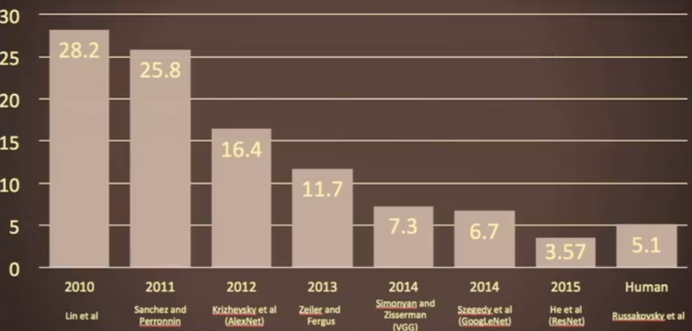
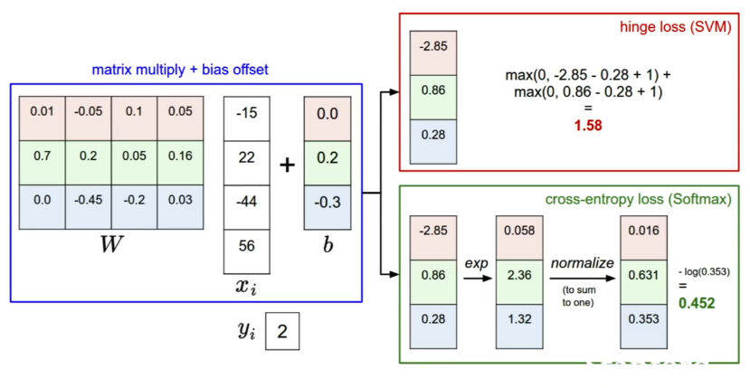

Computer Vision Intro
History of Computer Vision
The onset of vision started the Cambrian Evolution.
In Humans, 50% of our neurons are involved in visual processing.
Hubel and Weisel - Cat visual neocortex.
Block World - first Vision paper
1966 - The Summer Vision Project
David Marr - MIT vision scientist, wrote book <Vision>
Generalized Cylinder, Pictoral Structure
Object segmentation (Normalized Cut 1997)
Face Detection (Viola and Jones)
SIFT Features (Lowe, 1999)
1998 - LeCun et al 1998. First CNN paper for recognizing digits
Spatial Pyramid Matching (2006)
Human Gesture Recognition (Histogram of Gradients HoG 2005, Deformable Part Model 2009)
Old Fashioned Image Features
Color Histogram - have a huge spectrum of color buckets and for each pixel, map the pixel into the bucket to get a histogram of colors (Appendix 6)
Histogram of Oriented Gradients (HoG) - divide image into 8x8 pixelm regions, within each region quantize edge direction into 9 bins, which is a histogram of occurence of 9 difference types of edges in this 8x8 pixel region (9d vector). Formerly very popularly used for object recognition. (Appendix 6)
Bag of Words - Extract random patches from images, cluster patches to form “codebook” of visual words”, and encode images of “bags” of these patches. The “words” tend to cover different types of edges. (Appendix 6)
Datasets:
Object Recognition was the blocking problem in Computer Vision (PASCAL Visual Object Challenge, 20 object categories)
CIFAR 10 (small test set - 10 classes, 50,000 training images, 10000 test images)
ImageNET - Recognize most of the objects in the world (downloaded billions of data off the internet, organized by wordNET, then labeled using Mechanical Turk) - 1000 classes, 1.4 million images (2)
CV Problems
Image Classification
Object Detection
Action Classification
Image captioning
Sementic Segmentation
AR/VR
Naive Baselines
- Toy Naive Baseline: k- Nearest Neighbors with L1 distance - Never used in practice because pixel distance between images is not semantically important, and because of the curse of dimensionality (Appendix 1)
- Toy Naive Baseline: Linear Classification
Loss Functions and Optimization:
In classification generally these two types are used:
SVM Loss (Appendix 4)
Softmax loss (Appendix 4)
You also have to do regularization (Appendix 5)
Appendix 1:
L1 metric for k-Nearest Neighbors
L1 distance depends on the coordinate system (so if each feature has a defined distance, maybe L1 is best)
You can also use L2 distance.
K-Nearest Neighbors: Increasing k smoothes your decision boundary. Classification based on majority vote between k nearest neighbors.
Appendix 2: State of the Art on ImageNet

Appendix 3:
Image Retrieval Using Scene Graphs
Appendix 4: SVM Loss

Appendix 5: Regularization
Appendix 6: Old Fashioned Image Features